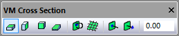
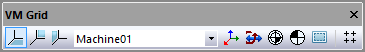

{kind=link}
Simulation»Show
Toggles the display of various visual aids, including:
visibility of various components (i.e., filters),
workpiece vs. model coordinates, and the
Simulation»Show»Wireframe

The Show Wireframe function switches between solid and wireframe rendering of the simulation window.
Wireframe mode enables objects that are behind others to be seen. However, an object that is obscured by another still cannot be selected with the mouse pointer, even when in wireframe mode, because the selection is done on the faces of surfaces, not on their vertices.
When looking at the backside of a surface in “solid” mode, the surface may appear as solid, or as wireframe, or invisible. This setting is controlled by the “Backface” options in the Simulation»Options dialog Misc tab.
Simulation»Show»Tool Path (Ctrl T) (CERUN & GENER only)
{kind=link}

The Show Tool Path function shows or hides tool path tracing in the simulation window. Tracing can also be toggled from the VM Tool Path toolbar. Tracing shows the path of the tool with respect to the part, and can appear at the tool-tip or the spindle control point. Rotary motions may cause linear tool paths to appear as curves; this is natural and reflects the actual path of the tool with respect to the part.
The tool path trace shows different colors for rapid and feed motions. The default is red for rapid positioning motions and green for all feed interpolated motions. Tool paths modified in some form by SmartPATH, SmartCUT and SmartFEED, can show different colors and dash styles to indicate the type of modification. When using the “Synchronize” feature from a Trace window, the Source window, the Time Line, or from an in-process stock cut in the simulation window, then the corresponding motion is instead traced in blue. Alternately, select any portion of a tool-path trace with the right-mouse button and choose “Synchronize” from the pop up menu, to synchronize all other windows to that moment in time.
The trace can be limited to a specified elapsed time, or it can show the tool path for a specified number of tools or operations, or for the entire program. Trace options can be set in the VM Tool Path toolbar as well as in the Simulation»Options dialog Tool path tab.
Simulation»Show»Tool Vector (CERUN & GENER only)
The Show Tool Vector function shows or hides the tool axis vector when tool path tracing is enabled in the simulation window. Tool axis vector tracing can also be toggled from the VM Tool Path toolbar. The length, color and line style of the tool axis vector can be set in the Simulation»Options dialog Tool path tab.
Simulation»Show»Tool Path as Overlay (Ctrl Shift T) (CERUN & GENER only)
Selecting the Show Tool Path as Overlay function will ensure that the tool path always remains visible, even when it would normally be hidden behind other objects in the scene. The overlay setting can also be toggled from the VM Tool Path toolbar.

Simulation»Show»Filters (CERUN & GENER only)

The Show Filter functions are toggles that activate or deactivate the display of various components in the scene. Filters can also be toggled from the VM View Filters toolbar.

The Machine filter toggles the display of all components defined within the model. This includes the machine, heads and any other model objects as defined and saved in the model with QUEST.
{kind=link}
The Tools filter toggles the display of all tooling components defined at run-time via the Simulation»Tools (Ctrl Alt T) dialog. This includes tools and their holders, both active and inactive.
{kind=link}
The Fixtures filter toggles the display of the holding devices as defined at run-time via the Simulation»Parts/Fixtures (Ctrl Alt P) dialog Fixtures tab.

 The Stock and Parts filters toggle the display of the
workpiece as defined at run-time via the Simulation»Parts/Fixtures
dialog Part tab. The stock is the original uncut raw stock at the
start of processing; the part is the design part.
The Stock and Parts filters toggle the display of the
workpiece as defined at run-time via the Simulation»Parts/Fixtures
dialog Part tab. The stock is the original uncut raw stock at the
start of processing; the part is the design part.
The remaining filters are only available when the Material Removal Simulation (MRS) license option is enabled.

The In-process Stock filter toggles the display of the stock as modified by the cutting action of the tools. At the start of processing, the Stock and In-process Stock are identical, but they should be quite different by the end of processing.

The Stock Checkpoints filter toggles the display of the in-process stock as it appeared at earlier moments in time when moving the Time Line backwards and forwards. These earlier checkpoints can be taken at each tool change, at each operation and/or periodically during long cutting sequences as controlled from the Simulation»Options menu MRS tab “In-process stock checkpoints” settings.

The Boolean Overcut filter toggles the display of any gouges in the in-process stock as compared to the original part. Gouges are shown in red. VM only compares those in-process stock and part components that are associated to each other. Part/stock association is done from the Simulation»Parts/Fixtures menu.
{kind=link}
The Boolean Undercut filter similarly toggles the display of excess in-process stock when compared to the original part. Excess material is shown in blue.
{kind=link}
The Colorized Boolean filter modifies the color of the Boolean overcut and undercut regions, based on the thickness of the gouge or excess material. Colorized Boolean settings are controlled from the Simulation»Compare (Ctrl Alt Q) dialog.

The Transparent Zero filter modifies the display of the colorized Boolean comparison, to show in a transparent color all faces of the object that are in the tolerance zone between gouge and excess material. This setting can be used to see a gouge or excess in the context of the entire part.
{kind=link}
Simulation»Show»Cross Section (CERUN & GENER only)
{kind=link}
The Show Cross Section functions can be used to obtain a cross section view of the in-process stock, which is only available when the Material Removal Simulation (MRS) license option is enabled. These functions can also be accessed from the VM Cross Section toolbar.


 The XY, YZ and ZX Plane selections cause the stock to be
sectioned along the specified stock mount point plane.
The XY, YZ and ZX Plane selections cause the stock to be
sectioned along the specified stock mount point plane.

The Custom Plane selection can be used to define a cross section plane using the Simulation»Measure picking functions described here. For example, a cross section plane can be defined by picking a face, or by picking 3 points that lie on the plane, etc.

The Invert Plane button toggles between showing the in-process stock on one side of the cross section plane or the other.

The Show Grid button enables or disables the display of a grid on the cross section plane. Grid settings are the same as for the Simulation»Grid feature.

 The Push and Pull Plane buttons offset the cross section
plane by a fixed amount as defined in the Simulation»Options dialog
Misc tab.
The Push and Pull Plane buttons offset the cross section
plane by a fixed amount as defined in the Simulation»Options dialog
Misc tab.
The Plane Offset input field in the toolbar shows the current cross section plane offset resulting from the Push or Pull Plane functions. A value can also be entered into this field to define the required offset.
Simulation»Show»XY Plane Grid
Simulation»Show»YZ Plane Grid
Simulation»Show»ZX Plane Grid
{kind=link}
The Show XYZ Plane Grid functions activate or deactivate wireframe grids showing the XY, YZ and ZX datum planes of the model. Grid visibility can also be toggled from the VM Grid toolbar. Grids are normally displayed with respect to the base frame of the model, but this can be changed by selecting a different frame of interest from the drop-down list on the VM Grid toolbar.
Grid spacing, colors, units and other settings are all controlled by selecting Simulation»Grid (Ctrl Alt G).
Simulation»Show»Axes Marker

The Show Axes Marker function shows or hides the axes arrows that show the origin (i.e., 0,0,0 point) of the currently selected object. These markers can also be toggled from the VM Grid toolbar.
By default, each axis appears in a different color; red for X, green for Y and blue for Z. The axes marker color settings as well as the arrow appearance and size can all be changed by selecting Simulation»Grid (Ctrl Alt G).
Simulation»Show»Kinematics
The Show Kinematics function shows or hides the markers that identify all axes types except for Reference Axes. The visible marker types are as follows:
A linear axis appears as a pale blue ribbon line with arrows at each end. The current axis position is indicated by a darker colored band.
A rotary axis appears as a light mauve ribbon arc, with a single arrow serving the dual purpose of pointing in the positive rotation direction and indicating the current position.
A curve axis appears as a dark mauve ribbon connecting each of the points in the curve axis profile. The current axis position is indicated by a lighter colored band.
A tool axis appears as two 2D profiles of a holder and tool; one aligned with the X axis and the other with the Y axis.
A stock axis appears as a gold colored rectangle, with an internal red-green-blue coordinate frame marker.
A head axis appears as a gold colored 2D profile of a 90º head.
A reference axis appears as a red-green-blue coordinate frame marker.
The kinematics markers can also be toggled from the VM Grid toolbar.
Simulation»Show»Workpiece Reference
Simulation»Show»Tool Reference
These functions show or hide markers that identify reference positions calculated by the virtual controller. The reference marker types are as follows:

The Workpiece Reference toggles the display of a marker in the simulation window showing the origin and orientation of the workpiece coordinate frame. This frame includes the effects of fixture compensation, RTCP and any local coordinate system (LCS).
{kind=link}
The Tool Reference toggles the display of a marker in the simulation window showing the offset at the spindle control point (SCP) due to the effects of tool length or tool offset compensation.
The reference markers can also be toggled from the VM Grid toolbar.
Simulation»Show»Safety Zones
The Show Safety Zones function enables or disables the display of the safety zone that surrounds any collision enabled object that also has a safety clearance distance defined. The safety zone appears as a transparent light blue surface, offset from the original surface by the safety distance.
An object’s safety zone is always shown in transparent orange when another collision-enabled object touches it, regardless of the Show Safety Zones setting. Colliding objects are always shown in transparent red. The intersection between colliding objects is shown as a bright yellow line, unless this feature is disabled in the Simulation»Options dialog (Ctrl Alt O).
Safety zone visibility can also be toggled from the VM Grid toolbar.
Simulation»Show»Workpiece Coords (Ctrl W) (CERUN & GENER only)
The Show Workpiece Coords function toggles between the display of linear axes values and workpiece linear coordinates in both the Controller Axes tab and the simulation window HUD. When workpiece coordinates are enabled, the linear axes are labeled Xw, Yw and Zw. The value shown is the distance from the local coordinate system (LCS) origin.
Simulation»Show»Display
Simulation»Show»Next Display (Ctrl D) (CERUN & GENER only)
Simulation»Show»Previous Display (Ctrl Shift D) (CERUN & GENER only)
The Display menu selection shows or hides the “heads-up” status display that floats in front of the simulation window. The HUD lists the status of various components of the machine (e.g., current tool, axes positions, feed rate). The content of the heads-up displays (there can be many) are defined by selecting Simulation»Display (Ctrl Alt D) described here.
Display menu choices are stored in the Windows Registry; not with the model or the “.vsw” setup file.
During GENER and CERUN processing, you can cycle between the various display content types using the Next Display (Ctrl D) and Previous Display (Ctrl Shift D) menu selections.
Note
The Ctrl D and Ctrl Shift D shortcuts are only available in the GENER and CERUN Simulation windows. They are not available in the QUEST Model window; in QUEST, the Ctrl+D shortcut instead activates the Database navigator.
The heads-up display can also be cycled from the GENER and CERUN VM Mode toolbar.